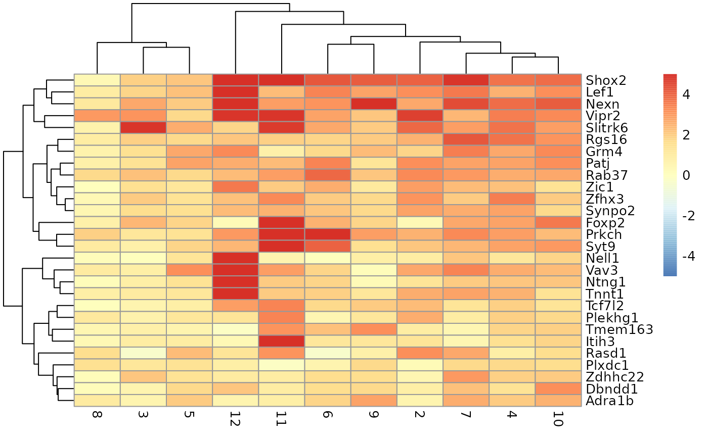
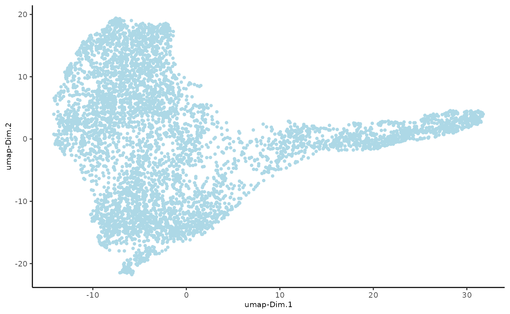

vignettes/interoperability_spatialexperiment.Rmd
interoperability_spatialexperiment.RmdGiotto allows seamless analysis of spatial transcriptomics data provided through a range of functions and algorithms. At the same time, it also allows effortless conversion to other object types, so the data can be analyzed with other tools including packages from Bioconductor that mostly use *Experiment objects and their derivatives. In this tutorial, we show how cross-conversion between Giotto and SpatialExperiment objects can complement spatial transcriptomic analyses.
In the first part of the tutorial, we load an example Giotto object, convert it to SpatialExperiment object and use a multitude of packages from Bioconductor to analyze it. In the second part, we use an example SpatialExperiment object, convert it to Giotto and drive the analysis with the toolkit.
In this part of the tutorial, we show the conversion of a an example Giotto object to SpatialExperiment object and use several packages to process it. Initially, we load the required packages:
First, we load a example dataset from the GiottoData package. For this tutorial, we import a mini mouse brain dataset generated using the visium protocol.
g <- loadGiottoMini(dataset = "visium")## Warning in .check_giotto_python_modules(my_python_path = instructions(.Object, : module: pandas was not found with python path: /usr/bin/python3## Warning in .check_giotto_python_modules(my_python_path = instructions(.Object, : module: igraph was not found with python path: /usr/bin/python3## Warning in .check_giotto_python_modules(my_python_path = instructions(.Object, : module: leidenalg was not found with python path: /usr/bin/python3## Warning in .check_giotto_python_modules(my_python_path = instructions(.Object, : module: community was not found with python path: /usr/bin/python3## Warning in .check_giotto_python_modules(my_python_path = instructions(.Object, : module: networkx was not found with python path: /usr/bin/python3## Warning in .check_giotto_python_modules(my_python_path = instructions(.Object, : module: sklearn was not found with python path: /usr/bin/python3## Warning in .check_giotto_python_modules(my_python_path = instructions(.Object, : module: pandas was not found with python path: /usr/bin/python3## Warning in .check_giotto_python_modules(my_python_path = instructions(.Object, : module: igraph was not found with python path: /usr/bin/python3## Warning in .check_giotto_python_modules(my_python_path = instructions(.Object, : module: leidenalg was not found with python path: /usr/bin/python3## Warning in .check_giotto_python_modules(my_python_path = instructions(.Object, : module: community was not found with python path: /usr/bin/python3## Warning in .check_giotto_python_modules(my_python_path = instructions(.Object, : module: networkx was not found with python path: /usr/bin/python3## Warning in .check_giotto_python_modules(my_python_path = instructions(.Object, : module: sklearn was not found with python path: /usr/bin/python3We now convert this imported giotto object into a SpatialExperiment object using the “giottoToSpatialExperiment” function.
gspe <- giottoToSpatialExperiment(g)For each spatial unit the converter function returns a separate SpatialExperiment object. The output is a list of objects (one object for each unit) therefore we select the first object and use it downstream.
spe <- gspe[[1]]Now, we do some processing on the object including quality control, normalization, feature selection and dimensionality reduction.
Using the scater package from Bioconductor, we perform some initial quality control analysis. We particularly look for mitochondrial genes and compute some quality control metrics including total counts and features per cell. We then visualize these metrics and select thresholds to remove low quality cells.
library(scater)
# identify mitochondrial genes
is_mito <- grepl("(^MT-)|(^mt-)", rownames(spe))
table(is_mito)## is_mito
## FALSE
## 634
# calculate per-spot QC metrics and store in colData
spe <- addPerCellQC(spe, subsets = list(mito = is_mito),assay.type = "raw_rna_cell")
head(colData(spe))## DataFrame with 6 rows and 14 columns
## cell_ID in_tissue nr_feats perc_feats total_expr
## <character> <integer> <integer> <numeric> <numeric>
## AAAGGGATGTAGCAAG-1 AAAGGGATGTAGCAAG-1 1 227 35.8044 995.149
## AAATGGCATGTCTTGT-1 AAATGGCATGTCTTGT-1 1 283 44.6372 1123.875
## AAATGGTCAATGTGCC-1 AAATGGTCAATGTGCC-1 1 248 39.1167 1027.632
## AAATTAACGGGTAGCT-1 AAATTAACGGGTAGCT-1 1 222 35.0158 974.377
## AACAACTGGTAGTTGC-1 AACAACTGGTAGTTGC-1 1 313 49.3691 1174.488
## AACAGGAAATCGAATA-1 AACAGGAAATCGAATA-1 1 338 53.3123 1229.935
## leiden_clus custom_leiden sample_id sum detected
## <numeric> <numeric> <character> <numeric> <integer>
## AAAGGGATGTAGCAAG-1 3 1 sample01 470 227
## AAATGGCATGTCTTGT-1 2 3 sample01 843 283
## AAATGGTCAATGTGCC-1 5 2 sample01 725 248
## AAATTAACGGGTAGCT-1 4 2 sample01 529 222
## AACAACTGGTAGTTGC-1 4 2 sample01 1023 313
## AACAGGAAATCGAATA-1 2 3 sample01 1403 338
## subsets_mito_sum subsets_mito_detected subsets_mito_percent
## <numeric> <integer> <numeric>
## AAAGGGATGTAGCAAG-1 0 0 0
## AAATGGCATGTCTTGT-1 0 0 0
## AAATGGTCAATGTGCC-1 0 0 0
## AAATTAACGGGTAGCT-1 0 0 0
## AACAACTGGTAGTTGC-1 0 0 0
## AACAGGAAATCGAATA-1 0 0 0
## total
## <numeric>
## AAAGGGATGTAGCAAG-1 470
## AAATGGCATGTCTTGT-1 843
## AAATGGTCAATGTGCC-1 725
## AAATTAACGGGTAGCT-1 529
## AACAACTGGTAGTTGC-1 1023
## AACAGGAAATCGAATA-1 1403We plot a histogram of library size and select a threshold of 50 to remove low quality cells.
# histogram of library sizes
hist(colData(spe)$sum, breaks = 20)
# select QC threshold
qc_lib_size <- colData(spe)$sum < 50We select a threshold of 18 for number of features detected per cell and remove the low quality cells.
# histogram of numbers of expressed genes
hist(colData(spe)$detected, breaks = 20)
# select QC threshold for number of expressed genes
qc_detected <- colData(spe)$detected < 18
# combined set of discarded spots
discard <- qc_lib_size | qc_detected
table(discard)## discard
## FALSE
## 624
colData(spe)$discard <- discard
spe <- spe[, !colData(spe)$discard]
spe## class: SpatialExperiment
## dim: 634 624
## metadata(1): image
## assays(3): raw_rna_cell normalized_rna_cell scaled_rna_cell
## rownames(634): Gna12 Ccnd2 ... 9630013A20Rik 2900040C04Rik
## rowData names(7): feat_ID nr_cells ... mean_expr_det hvf
## colnames(624): AAAGGGATGTAGCAAG-1 AAATGGCATGTCTTGT-1 ...
## TTGTGGCCCTGACAGT-1 TTGTTCAGTGTGCTAC-1
## colData names(15): cell_ID in_tissue ... total discard
## reducedDimNames(5): pca custom_pca umap custom_umap tsne
## mainExpName: NULL
## altExpNames(0):
## spatialCoords names(2) : sdimx sdimy
## imgData names(1): sample_idNow we calculate log-transformed normalized counts(logcounts) using library size factors using the scran package from Bioconductor.
library(scran)
# calculate library size factors
spe <- computeLibraryFactors(spe, assay.type="raw_rna_cell")
summary(sizeFactors(spe))## Min. 1st Qu. Median Mean 3rd Qu. Max.
## 0.1032 0.5003 0.8066 1.0000 1.2177 4.6123
hist(sizeFactors(spe), breaks = 20)
# calculate logcounts and store in object
spe <- logNormCounts(spe, assay.type="raw_rna_cell")
# check
assayNames(spe)## [1] "raw_rna_cell" "normalized_rna_cell" "scaled_rna_cell"
## [4] "logcounts"To identify HVGs (highly variable genes), we use a mean-variance method “modelGeneVar” from the scran package.
# fit mean-variance relationship
dec <- modelGeneVar(spe)
# visualize mean-variance relationship
fit <- metadata(dec)
plot(fit$mean, fit$var,
xlab = "mean of log-expression", ylab = "variance of log-expression")
curve(fit$trend(x), col = "dodgerblue", add = TRUE, lwd = 2)Now we apply dimensionality reduction methods to visualize the data and to generate inputs for further downstream analyses. For this purpose, we use the runPCA method to compute the top principal components and then finally plot the top two components.
# compute PCA
set.seed(123)
spe <- runPCA(spe)
reducedDimNames(spe)## [1] "pca" "custom_pca" "umap" "custom_umap" "tsne"
## [6] "PCA"
# plot top 2 PCA dimensions
plotDimRed(spe , type = "PCA")To visualize the clusters, we use a non-linear method “UMAP”, perform clustering and plot the cluster labels over on the UMAP.
spe <- scater::runUMAP(spe)
colnames(reducedDim(spe,"UMAP")) <- c("UMAP1","UMAP2")
plotDimRed(spe, type = "UMAP")
# graph-based clustering
set.seed(123)
k <- 5
gGraphsnn <- buildSNNGraph(spe, k = k, use.dimred = "PCA")
g_walk <- igraph::cluster_walktrap(gGraphsnn)
clus <- g_walk$membership
table(clus)## clus
## 1 2 3 4 5 6 7 8 9 10 11 12
## 93 93 24 112 49 34 59 21 30 78 14 17
# plot clusters in UMAP reduced dimensions
colData(spe)$label <- clus
plotDimRed(spe, type = "UMAP",annotate = "label", palette = "libd_layer_colors")We identify the marker genes in each cluster and visualize the top genes in each cluster using a pheatmap
# test for marker genes
markers <- findMarkers(spe, test = "binom", direction = "up")
# plot log-fold changes for one cluster over all other clusters
# selecting cluster 1
interesting <- markers[[1]]
best_set <- interesting[interesting$Top <= 5, ]
logFCs <- getMarkerEffects(best_set)
pheatmap(logFCs, breaks = seq(-5, 5, length.out = 101))
# plot log-transformed normalized expression of top genes for one cluster
top_genes <- head(rownames(interesting))
plotExpression(spe, x = "label", features = top_genes)In this section, we load a sample dataset in the form of a SpatialExperiment object, convert it to Giotto and drive the downstream analysis with the Giotto toolkit.
Loading sample SpatialExperiment Object as spe
spe <- Visium_humanDLPFC()
spe## class: SpatialExperiment
## dim: 33538 4992
## metadata(0):
## assays(1): counts
## rownames(33538): ENSG00000243485 ENSG00000237613 ... ENSG00000277475
## ENSG00000268674
## rowData names(3): gene_id gene_name feature_type
## colnames(4992): AAACAACGAATAGTTC-1 AAACAAGTATCTCCCA-1 ...
## TTGTTTGTATTACACG-1 TTGTTTGTGTAAATTC-1
## colData names(7): barcode_id sample_id ... ground_truth cell_count
## reducedDimNames(0):
## mainExpName: NULL
## altExpNames(0):
## spatialCoords names(2) : pxl_col_in_fullres pxl_row_in_fullres
## imgData names(4): sample_id image_id data scaleFactorConverting SpatialExperiment Object to giottoobj. The new giottoobject is n_g.
#create giottoObject from spe
n_g <- spatialExperimentToGiotto(spe, python_path = instructions(g)$python_path)##
## image has already been used, will be overwrittenWe filter the giottoobj and then run normalization on it.
n_g <- processGiotto(
n_g,
filter_params = list(expression_threshold = 1,
feat_det_in_min_cells = 100,
min_det_feats_per_cell = 10),
norm_params = list(norm_methods = 'standard',
scale_feats = TRUE,
scalefactor = 6000),
stat_params = list(expression_values = 'normalized'),
adjust_params = list(expression_values = c('normalized'),
covariate_columns = 'nr_feats')
)## 1. start filter step
## completed 1: preparation## Warning: Unknown argument 'on' has been passed.## completed 2: subset expression data
## completed 3: subset spatial locations
## completed 4: subset cell metadata
## completed 5: subset feature metadata
## completed 6: subset spatial network(s)
## completed 7: subsetted dimension reductions
## completed 8: subsetted nearest network(s)
## completed 9: subsetted spatial enrichment results## Warning in .check_giotto_python_modules(my_python_path = instructions(.Object, : module: pandas was not found with python path: /usr/bin/python3## Warning in .check_giotto_python_modules(my_python_path = instructions(.Object, : module: igraph was not found with python path: /usr/bin/python3## Warning in .check_giotto_python_modules(my_python_path = instructions(.Object, : module: leidenalg was not found with python path: /usr/bin/python3## Warning in .check_giotto_python_modules(my_python_path = instructions(.Object, : module: community was not found with python path: /usr/bin/python3## Warning in .check_giotto_python_modules(my_python_path = instructions(.Object, : module: networkx was not found with python path: /usr/bin/python3## Warning in .check_giotto_python_modules(my_python_path = instructions(.Object, : module: sklearn was not found with python path: /usr/bin/python3##
## Feature type: rna
## Number of cells removed: 0 out of 4992
## Number of feats removed: 21922 out of 33538
## 2. start normalization step
## 3. start cell and gene statistics step
## 4. start adjusted matrix stepWe first find the highly variable features (HVF) and then use these to compute the reduced dimensions using PCA.
Calculate HVF using the loess regression prediction model:
n_g <- calculateHVF(gobject = n_g, method = 'cov_loess')## return_plot = TRUE and return_gobject = TRUE
##
## plot will not be returned to object, but can still be saved with save_plot = TRUE or manuallyPCA can be run based on the highly variable genes. After PCA, a tSNE, a UMAP, or both may be run. For this example, highly variable genes have been identified using Loess Regression predictions.
## Select genes highly variable genes that fit specified statistics
# These are both found within feature metadata
feature_metadata = getFeatureMetadata(n_g)[]
featgenes = feature_metadata[hvf == 'yes' & perc_cells > 4 & mean_expr_det > 0.5]$feat_ID
## run PCA on expression values (default)
n_g <- Giotto::runPCA(gobject = n_g, feats_to_use = featgenes, scale_unit = F, center = F)Run a UMAP based on PCA dimension reduction and view pre-clustering UMAP.

Cells may be clustered into distinct groups based on feature expression. To cluster, the Giotto Object must contain data that has undergone PCA dimension reduction, either tSNE or UMAP dimension reduction, and have a neighbor network.
Create a shared nearest neighbor network (sNN), where k is the number of k neighbors to use:
n_g <- createNearestNetwork(gobject = n_g, type = "sNN", dimensions_to_use = 1:15, k = 15)Cells can be clustered in Giotto using k-means, Leiden, or Louvain clustering. These clustering algorithms return cluster information within cell_metadata, which is named accordingly by default. The name may be changed by providing the name argument, as shown in the code chunk below.
## k-means clustering
n_g <- doKmeans(gobject = n_g, dim_reduction_to_use = 'pca')## Warning: Quick-TRANSfer stage steps exceeded maximum (= 249600)
#Plot UMAP post-clustering to visualize kmeans
graph2 <- Giotto::plotUMAP(
gobject = n_g,
cell_color = 'kmeans',
show_NN_network = T,
point_size = 2.5
)Using previously created spatial network to calculate spatially variable genes using binSpect method.
n_g <- Giotto::createSpatialDelaunayNetwork(gobject = n_g)
showGiottoSpatNetworks(n_g)## └──Spatial unit "cell"
## └──S4 spatialNetworkObj "Delaunay_network" (11694 rows)
## from to sdimx_begin sdimy_begin sdimx_end
## <char> <char> <num> <num> <num>
## 1: AAACAACGAATAGTTC-1 CCAAGCTTGATCTCCT-1 3913 2435 4050
## 2: AAACAACGAATAGTTC-1 CAAGGGAGTGTATTTG-1 3913 2435 3981
## 3: AAACAACGAATAGTTC-1 GGGTTTCCGGCTTCCA-1 3913 2435 3775
## 4: AAACAACGAATAGTTC-1 TAACCGTCCAGTTCAT-1 3913 2435 3843
## sdimy_end distance weight
## <num> <num> <num>
## 1: 2436 137.0036 0.007299076
## 2: 2555 137.9275 0.007250185
## 3: 2434 138.0036 0.007246187
## 4: 2554 138.0616 0.007243145
##
ranktest = binSpect(
n_g, bin_method = 'rank',
calc_hub = T, hub_min_int = 5,
spatial_network_name = 'Delaunay_network'
)##
## This is the single parameter version of binSpect
## 1. matrix binarization complete
##
## 2. spatial enrichment test completed
##
## 3. (optional) average expression of high expressing cells calculated
##
## 4. (optional) number of high expressing cells calculatedHere we will subset on the top 300 spatial genes identified with binSpect. We will also show how to identify the top spatially correlated genes.
# 3.1 cluster the top 500 spatial genes into 20 clusters
ext_spatial_genes = ranktest[1:300,]$feats
# here we use existing detectSpatialCorGenes function to calculate pairwise distances between genes (but set network_smoothing=0 to use default clustering)
spat_cor_netw_DT = detectSpatialCorFeats(
n_g,
method = 'network',
spatial_network_name = 'Delaunay_network',
subset_feats = ext_spatial_genes
)
# 3.2 identify most similar spatially correlated genes for one gene
top10_genes = showSpatialCorFeats(spat_cor_netw_DT, feats = 'Dsp', show_top_feats = 10)Use the pheatmap to identify spatial co-expression modules and adjust the number of clusters (k) accordingly.
# 3.3 identify potenial spatial co-expression
spat_cor_netw_DT = clusterSpatialCorFeats(spat_cor_netw_DT, name = 'spat_netw_clus', k = 7)
# visualize clusters
graph3 <- heatmSpatialCorFeats(
n_g,
spatCorObject = spat_cor_netw_DT,
use_clus_name = 'spat_netw_clus',
heatmap_legend_param = list(title = NULL),
save_param = list(base_height = 6, base_width = 8, units = 'cm')
)genes from each co-expression module and then aggregate genes into meta genes.
# 3.4 create metagenes / co-expression modules
cluster_genes = getBalancedSpatCoexpressionFeats(spat_cor_netw_DT, maximum = 30)## [1] 1
## [1] 2
## [1] 3
## [1] 4
## [1] 5
## [1] 6
## [1] 7
n_g = createMetafeats(n_g, feat_clusters = cluster_genes, name = 'cluster_metagene')
graph4 <- spatCellPlot(
n_g,
spat_enr_names = 'cluster_metagene',
cell_annotation_values = as.character(c(1:7)),
point_size = 1, cow_n_col = 3
) ## R version 4.3.2 (2023-10-31)
## Platform: x86_64-pc-linux-gnu (64-bit)
## Running under: Ubuntu 22.04.3 LTS
##
## Matrix products: default
## BLAS: /usr/lib/x86_64-linux-gnu/openblas-pthread/libblas.so.3
## LAPACK: /usr/lib/x86_64-linux-gnu/openblas-pthread/libopenblasp-r0.3.20.so; LAPACK version 3.10.0
##
## locale:
## [1] LC_CTYPE=C.UTF-8 LC_NUMERIC=C LC_TIME=C.UTF-8
## [4] LC_COLLATE=C.UTF-8 LC_MONETARY=C.UTF-8 LC_MESSAGES=C.UTF-8
## [7] LC_PAPER=C.UTF-8 LC_NAME=C LC_ADDRESS=C
## [10] LC_TELEPHONE=C LC_MEASUREMENT=C.UTF-8 LC_IDENTIFICATION=C
##
## time zone: UTC
## tzcode source: system (glibc)
##
## attached base packages:
## [1] stats4 stats graphics grDevices utils datasets methods
## [8] base
##
## other attached packages:
## [1] STexampleData_1.10.0 ExperimentHub_2.10.0
## [3] AnnotationHub_3.10.0 BiocFileCache_2.10.1
## [5] dbplyr_2.4.0 scran_1.30.2
## [7] scater_1.30.1 scuttle_1.12.0
## [9] pheatmap_1.0.12 ggspavis_1.8.0
## [11] ggplot2_3.4.4 SpatialExperiment_1.12.0
## [13] SingleCellExperiment_1.24.0 SummarizedExperiment_1.32.0
## [15] Biobase_2.62.0 GenomicRanges_1.54.1
## [17] GenomeInfoDb_1.38.6 IRanges_2.36.0
## [19] S4Vectors_0.40.2 BiocGenerics_0.48.1
## [21] MatrixGenerics_1.14.0 matrixStats_1.2.0
## [23] GiottoData_0.2.7.0 GiottoUtils_0.1.5
## [25] Giotto_4.0.2 GiottoClass_0.1.3
##
## loaded via a namespace (and not attached):
## [1] RcppAnnoy_0.0.22 later_1.3.2
## [3] bitops_1.0-7 filelock_1.0.3
## [5] tibble_3.2.1 lifecycle_1.0.4
## [7] doParallel_1.0.17 edgeR_4.0.15
## [9] globals_0.16.2 lattice_0.21-9
## [11] backports_1.4.1 magrittr_2.0.3
## [13] limma_3.58.1 sass_0.4.8
## [15] rmarkdown_2.25 jquerylib_0.1.4
## [17] yaml_2.3.8 metapod_1.10.1
## [19] httpuv_1.6.14 ggside_0.2.3
## [21] reticulate_1.35.0 cowplot_1.1.3
## [23] DBI_1.2.1 RColorBrewer_1.1-3
## [25] abind_1.4-5 zlibbioc_1.48.0
## [27] purrr_1.0.2 RCurl_1.98-1.14
## [29] rappdirs_0.3.3 circlize_0.4.15
## [31] GenomeInfoDbData_1.2.11 ggrepel_0.9.5
## [33] irlba_2.3.5.1 listenv_0.9.1
## [35] terra_1.7-71 parallelly_1.36.0
## [37] dqrng_0.3.2 pkgdown_2.0.7
## [39] DelayedMatrixStats_1.24.0 colorRamp2_0.1.0
## [41] codetools_0.2-19 DelayedArray_0.28.0
## [43] shape_1.4.6 tidyselect_1.2.0
## [45] farver_2.1.1 ScaledMatrix_1.10.0
## [47] viridis_0.6.5 jsonlite_1.8.8
## [49] GetoptLong_1.0.5 BiocNeighbors_1.20.2
## [51] ellipsis_0.3.2 iterators_1.0.14
## [53] systemfonts_1.0.5 foreach_1.5.2
## [55] dbscan_1.1-12 tools_4.3.2
## [57] ragg_1.2.7 Rcpp_1.0.12
## [59] glue_1.7.0 gridExtra_2.3
## [61] SparseArray_1.2.4 xfun_0.42
## [63] dplyr_1.1.4 withr_3.0.0
## [65] BiocManager_1.30.22 fastmap_1.1.1
## [67] bluster_1.12.0 fansi_1.0.6
## [69] digest_0.6.34 rsvd_1.0.5
## [71] R6_2.5.1 mime_0.12
## [73] textshaping_0.3.7 colorspace_2.1-0
## [75] Cairo_1.6-2 gtools_3.9.5
## [77] RSQLite_2.3.5 utf8_1.2.4
## [79] generics_0.1.3 data.table_1.15.0
## [81] FNN_1.1.4 httr_1.4.7
## [83] S4Arrays_1.2.0 uwot_0.1.16
## [85] pkgconfig_2.0.3 gtable_0.3.4
## [87] blob_1.2.4 ComplexHeatmap_2.18.0
## [89] GiottoVisuals_0.1.4 XVector_0.42.0
## [91] htmltools_0.5.7 clue_0.3-65
## [93] scales_1.3.0 png_0.1-8
## [95] knitr_1.45 rjson_0.2.21
## [97] checkmate_2.3.1 curl_5.2.0
## [99] GlobalOptions_0.1.2 cachem_1.0.8
## [101] stringr_1.5.1 BiocVersion_3.18.1
## [103] parallel_4.3.2 vipor_0.4.7
## [105] AnnotationDbi_1.64.1 desc_1.4.3
## [107] pillar_1.9.0 grid_4.3.2
## [109] vctrs_0.6.5 promises_1.2.1
## [111] BiocSingular_1.18.0 beachmat_2.18.0
## [113] xtable_1.8-4 cluster_2.1.4
## [115] beeswarm_0.4.0 evaluate_0.23
## [117] magick_2.8.2 cli_3.6.2
## [119] locfit_1.5-9.8 compiler_4.3.2
## [121] rlang_1.1.3 crayon_1.5.2
## [123] future.apply_1.11.1 labeling_0.4.3
## [125] fs_1.6.3 ggbeeswarm_0.7.2
## [127] stringi_1.8.3 deldir_2.0-2
## [129] viridisLite_0.4.2 BiocParallel_1.36.0
## [131] munsell_0.5.0 Biostrings_2.70.2
## [133] Matrix_1.6-5 future_1.33.1
## [135] sparseMatrixStats_1.14.0 bit64_4.0.5
## [137] KEGGREST_1.42.0 statmod_1.5.0
## [139] shiny_1.8.0 interactiveDisplayBase_1.40.0
## [141] highr_0.10 igraph_2.0.1.1
## [143] memoise_2.0.1 bslib_0.6.1
## [145] bit_4.0.5